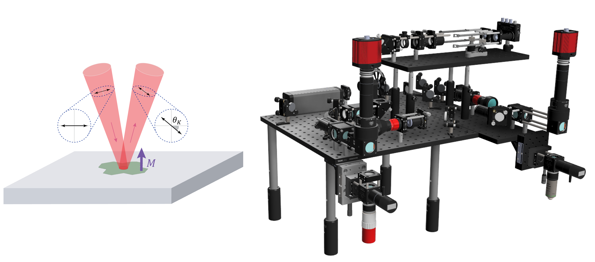
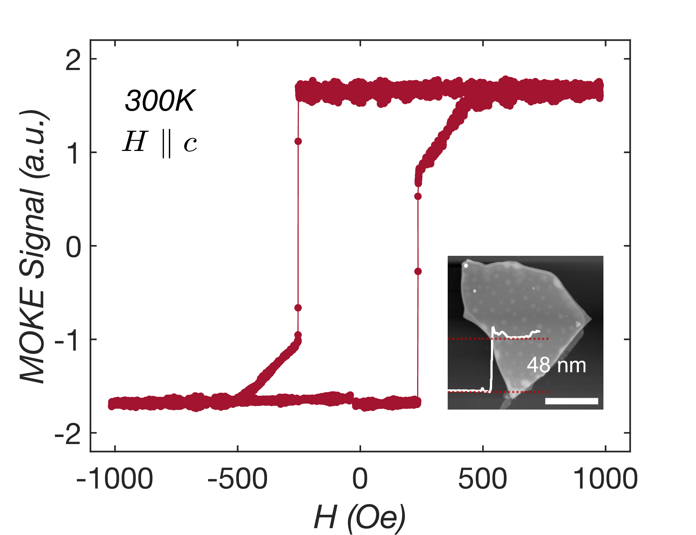

The magneto-optical Kerr effect (MOKE) has become a crucial tool in studying the magnetic properties of van der Waals (vdW) materials, especially in the two-dimensional (2D) limit. Over recent years, significant progress has been made in employing optical and electrical probes to explore magnetism in vdW materials down to the monolayer scale. MOKE is particularly valuable for its non-invasive nature and ability to probe magnetization without the need for complex nanofabrication processes.
Left: Schematic illustration of the magneto-optical Kerr effect (MOKE) principle, where linearly polarized light reflects off a magnetized surface, resulting in a rotation of the polarization angle due to out-of-plane magnetization (M).
Right: 3D CAD rendering of the custom-built MOKE setup, designed for high-resolution, non-contact probing of magnetic properties in 2D van der Waals materials.
MOKE relies on the interaction between linearly polarized light and a magnetized material. When light is reflected off the surface of a material with an out-of-plane magnetization component, its polarization direction undergoes a rotation. This rotation, known as the Kerr angle (θK), is directly related to the magnetization of the material. The Kerr angle changes depending on the direction of magnetization, allowing for precise measurements of the material's magnetic state. A polar MOKE setup, with light incident perpendicular to the sample, is especially sensitive to out-of-plane (OOP) magnetization, which is a critical feature in many vdW magnets.
One of the key advantages of MOKE is its ability to achieve high spatial resolution, often on the order of micrometers, through the use of a focused laser beam. This diffraction-limited resolution allows MOKE to probe small-scale magnetic domains in vdW materials, which are typically only a few atomic layers thick. As a non-contact optical technique, MOKE is ideal for characterizing air-sensitive 2D materials, avoiding exposure to damaging fabrication processes or environmental degradation.
In the context of 2D vdW magnets, MOKE has played an instrumental role in uncovering new magnetic phenomena. Recent studies have demonstrated its utility in investigating magnetic order in monolayer and few-layer vdW systems, such as CrI₃, Cr₂Ge₂Te₆, and Fe₃GeTe₂, where conventional magnetometers face limitations. This has made MOKE a vital tool for probing phase transitions, hysteresis, and other magnetic characteristics, furthering our understanding of low-dimensional magnetism and its potential applications in spintronic devices.
Assembled MOKE setup
The microscope has successfully been used to probe magnetization in few micrometer wide vdW magnetic materials at room temperature. Below is an example of a Polar MOKE measurement performed on exfoliated Fe3GaTe2, which was published in Nat Comm 15, 1485 (2024).
Polar MOKE measurement of the vdW ferromagnet Fe3GaTe2 at room temperature.
Inset - AFM micrograph and height profile of the Fe3GaTe2 flake. Scale bar - 10 μm